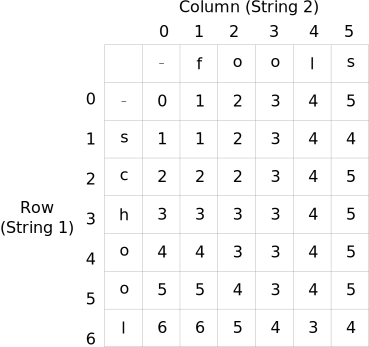
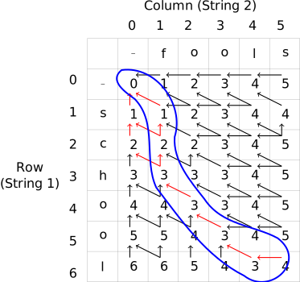

Week 6: Edit Distance Backtracing
Chris Tralie
Overview / Logistics
We talked about an iterative dynamic programming solution for the string edit distance in Module 10. The method we came up with was able to compute the optimal distance by filling in a table of costs of matching all pairs of substrings, and we were able to lookup the cost as the lower right element in this table, which corresponded to the cost between full strings. The table below shows an example for "school" versus "fools," where the optimal cost is 4

What this does not tell us is what operations were needed to get this answer. For this, we need another data structure to store what the optimal actions were at each step. The image below shows arrows drawing decisions that were optimal for every substring

To extract an optimal way to match, you must backtrace from the lower right element; that is, start at the lower right element and follow arrows until you get to [0, 0]. The red arrows show all of the decisions that are along a path that starts from [M, N] and ends up at [0, 0]. For example, one such path is
[[6, 5], [6, 4], [5, 3], [4, 2], [3, 1], [2, 1], [1, 1], [0, 0]]
The image below shows this path circled in blue

If we walk this path in the backwards direction from how we discovered it, we can translate this to the following operations to transform "school" into "fools":
Swap in an f for the s Delete c Delete h Match o and o Match o and o Match l and l Add s
This sequence has a total cost of 4 (1 swap, 2 deletes, and 1 add). But this is not the only path we could find! Consider the following path:
[[6, 5], [6, 4], [5, 3], [4, 2], [3, 1], [2, 0], [1, 0], [0, 0]]
This is shown below

This would translate into the following sequence
Delete s Delete c Swap in an f for the h Match o and o Match o and o Match l and l Add s
Interestingly, this also has a cost of 4, but it's a different way of getting that answer! (2 deletes, 1 swap, one add). And there is actually one more way (see if you can find it)
Programming Tasks
Click here to download the starter code.
Task 1: Backtrace breaking ties
Your first task is to backtrace by breaking ties in the optimal moves. The code already does this for you by choosing the left arrow if all else is equal, followed by the up arrow, followed by the diagonal arrow. The table moves stores a 1 if the left arrow (cost1) was the optimal at that cell, a 2 if the the up arrow (cost2) was optimal at that cell, and a 3 if the diagonal arrow (cost3) was optimal at that cell. You should create a loop to follow these arrows back from [M, N] to [0, 0]
Task 2: Backtracing all paths
If there are ties, it might also be interesting to know all possible paths from the lower right to the upper left of the table. So we don't just want to break ties, but to store all of the arrows. Write code to extract all paths this way. The easiest way to do this is using recursion. Every time you branch off, you need to make a new list.